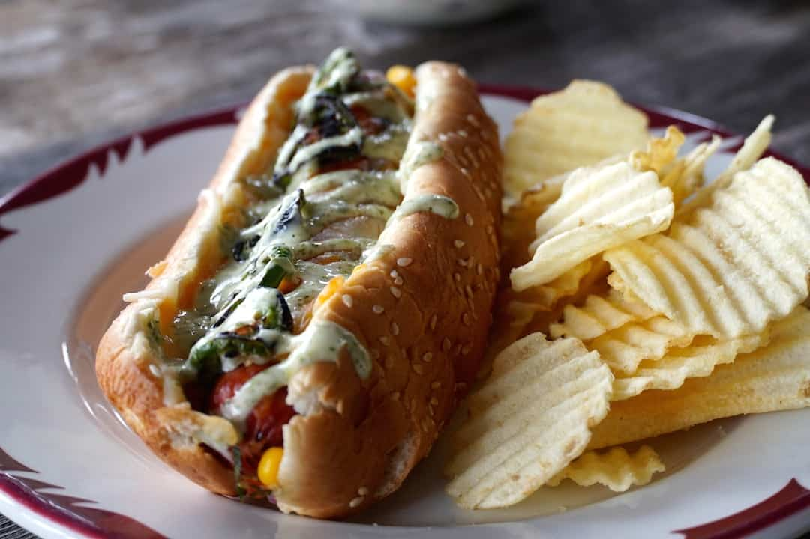

Tex Mex Hot Dog recipe ingredients
| Ingredients |
Amount |
Hot dog wieners |
4pcs |
| Hot dog or sausage buns |
4pcs |
| Corn salsa |
1cup |
| Shredded cheese |
1cup |
| Jalapeno peppers |
2pcs |
Directions
- Spoon equal amounts of corns salsa onto each bun
- Place once cooked wiener onto each bun
- Sprinkle with cheese
- Add grilled jalapenos
- Place prepared hot dogs into an casserole or baking pan
- Trasnfer to preheated 250F oven and bake for 10-15minutes until cheese has melted and bun is toasted
- Combine mayo, lime juice and cilantro and add to hot dogs as garnish
- Serve immediately
